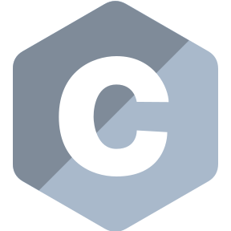
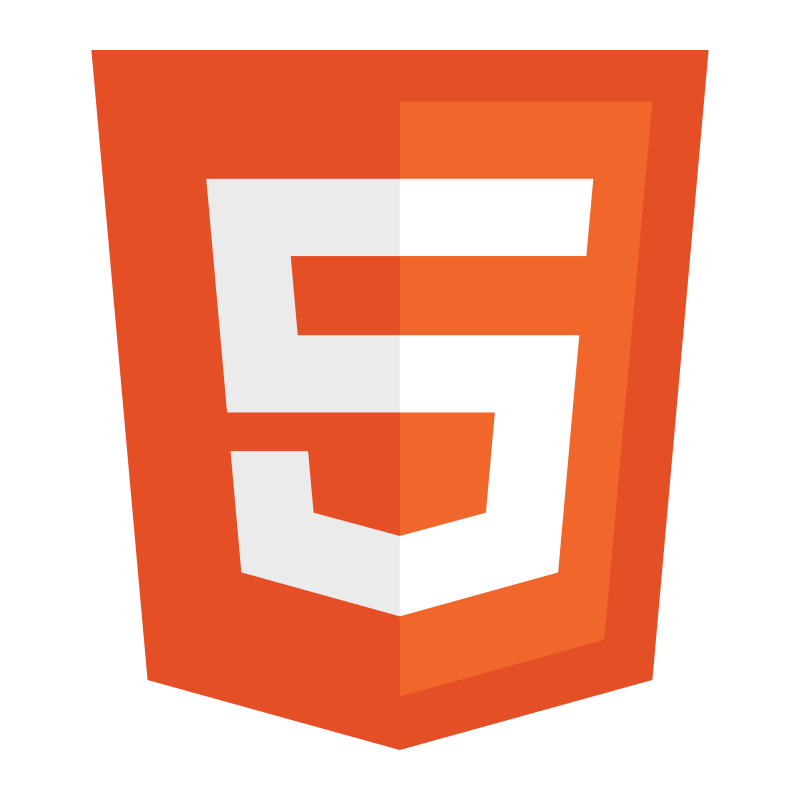
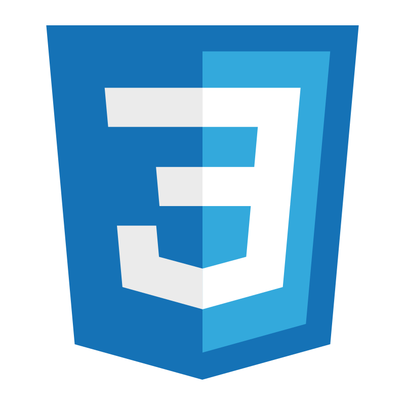
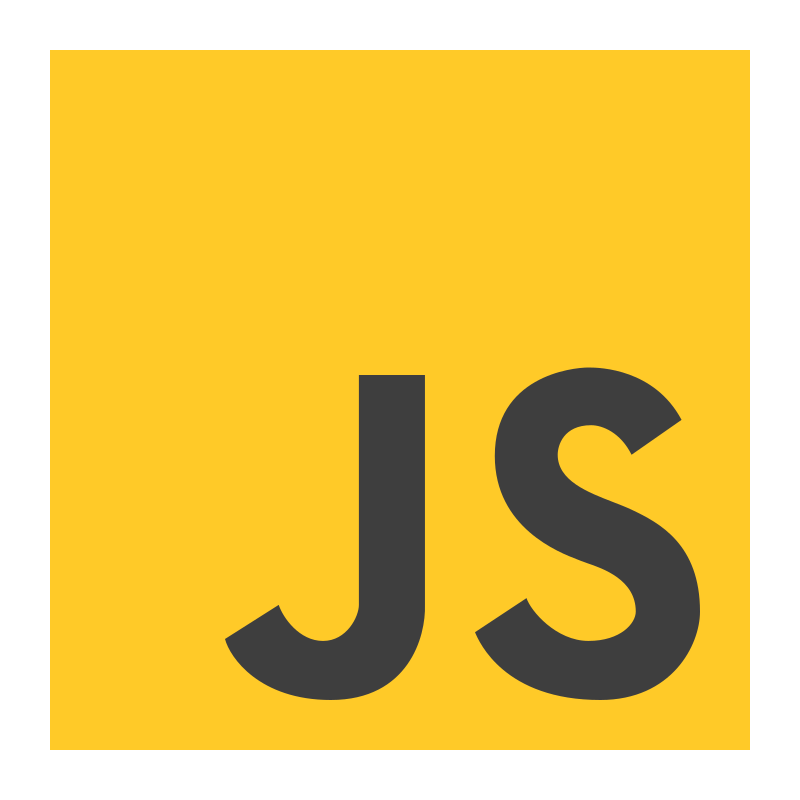

Arthur Fiolet
My Online Resume
-
OCR-Powered Word Search Puzzle Solver
I develop with two friends a software which purpose is to solve Word Search Puzzles. This project was centered about researching and developing an efficient image processing algorithm, as well as an OCR (Optical Character Recognition) neural network.
Links
Built with

-
SubWay Out
This project is a videogame created during my first year at EPITA with four classmates. SubWay Out is a 3D escape game taking place in the Parisian subway. This game has been created with Unity. Promoting the game has been one of our concern, therefore we developed a communication and marketing strategy. In this perspective, I developed a website for the game.
-
StockPilot
This project was about the creation of an inventory manager. I adapted it to the needs of a client that used it to manage and track IT equipment and hardware assets. From a technical point of view, I created a CURL API and three versions of the associated application: a web, a mobile and a desktop application. I also included a user and permission management system in the application. This project also helped me to develop my soft skills, as I hosted recurrent meetings to keep track of the project evolution and to adapt the final application to the needs of my client.
Links
Built with
-
Orientation Days Website
I developed a website for my high school with several classmates. This website was a web app designed to book workshops. We had to focus our efforts on creating a reliable, user-friendly and robust application, capable of handling an important traffic despite limited resources.
Built with



-
French High School Diploma Score Calculator
This website has been a project in which my goal was to build a website offering a pleasant experience on laptop. Its purpose is to compute a student's score at the French High School Diploma. It has been created following the way this diploma was graded in the academic 2022-2023 year.